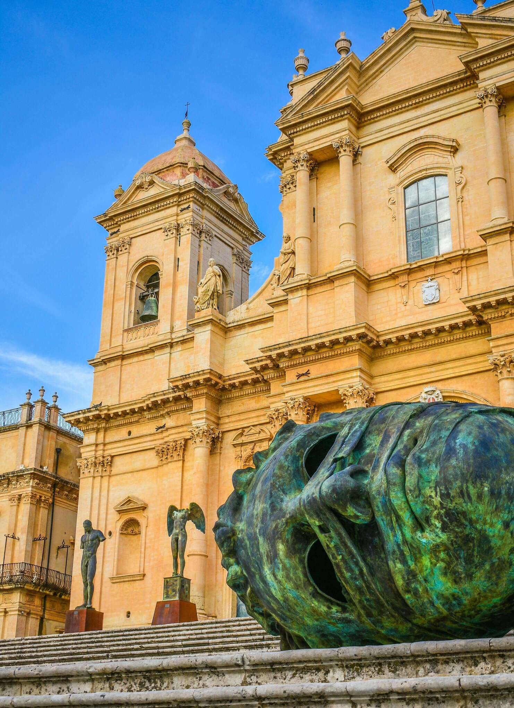

La storia
Tre secoli di arte, fede e cultura
Scopri il percorso straordinario del museo diocesano di Noto
300+
Anni di storia
6
Sale espositive
50000+
Visitatori annuali

Un patrimonio rinato dalle ceneri
La storia del Museo Diocesano è indissolubilmente legata a quella della Cattedrale di San Nicolò e dell'intera città di Noto. Il devastante terremoto del 1693, che rase al suolo l'antica città, segnò paradossalmente l'inizio di una delle più straordinarie imprese urbanistiche e artistiche della storia siciliana.
La ricostruzione di Noto, guidata da architetti visionari come Rosario Gagliardi e Paolo Labisi, diede vita a quella che oggi è considerata la "capitale del barocco siciliano". La nuova cattedrale, completata nel 1776, divenne il cuore pulsante della diocesi e il custode di un patrimonio artistico di inestimabile valore.
Nel 1950, la crescente consapevolezza della necessità di preservare e valorizzare questo patrimonio portò alla fondazione del Museo Diocesano, che da allora svolge un ruolo fondamentale nella tutela e nella diffusione della cultura artistica e religiosa del territorio.
La cronologia
Le tappe fondamentali della storia della Cattedrale
1693
Il grande terremoto
Il devastante terremoto dell'11 gennaio 1693 distrusse completamente l'antica citta di Noto. Dalla tragedia nacque l'opportunità di costruire una nuova citta, che sarebbe diventata un capolavoro del barocco siciliano
1694
La ricostruzione
Inizia la ricostruzione di Noto in un nuovo sito. I migliori architetti dell'epoca, tra cui Rosario Gagliardi, progettano la nuova cattedrale e il complesso diocesano
1776
Completamento della cattedrale
La cattedrale di San Nicolò viene completata dopo oltre 80 anni di lavori, diventando il fulcro della vita religiosa e culturale della città
1950
Fodazione del museo
Nasce ufficialmente il museo diocesano, con l'obiettivo di preservare e valorizzare il patrimonio artistico e religioso della diocesi di Noto
1996
Crollo della cupola
Il crollo della cupola della cattedrale segna un momento drammatico. Iniziano immediatamente i lavori di restauro che coinvolgeranno il museo
2002
Patrimonio UNESCO
Noto e le città tardo-barocche della val di Noto vengono iscritte nella lista del patrimonio mondiale dell'UNESCO, riconoscendo il valore universale del patrimonio della cattedrale
2007
Riapertura della cattedrale
Dopo un lungo restauro, la cattedrale riapre al pubblico. Il museo viene ampliato e rinnovato con nuovi spazi espositivi
Oggi
Un museo vivo
Il museo Diocesano continua la sua missione di custode e promotore del patrimonio culturale, accogliendo visitatori da tutto il mondo e offrendo attività educative per tutte le età